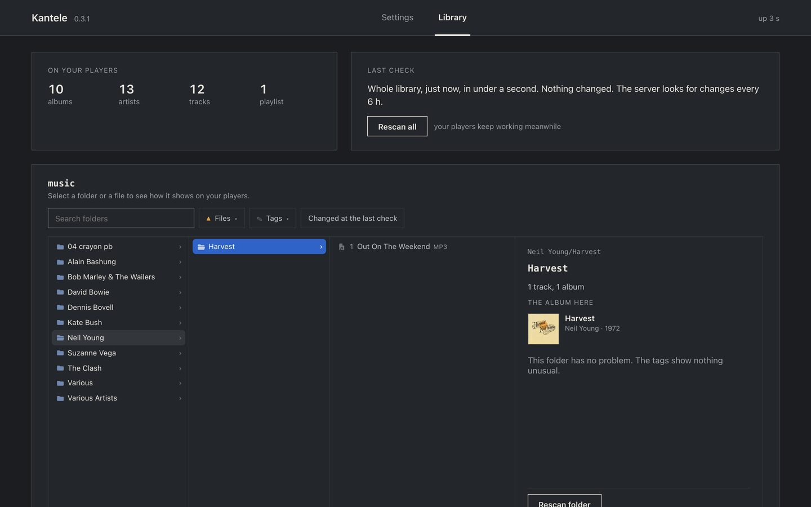
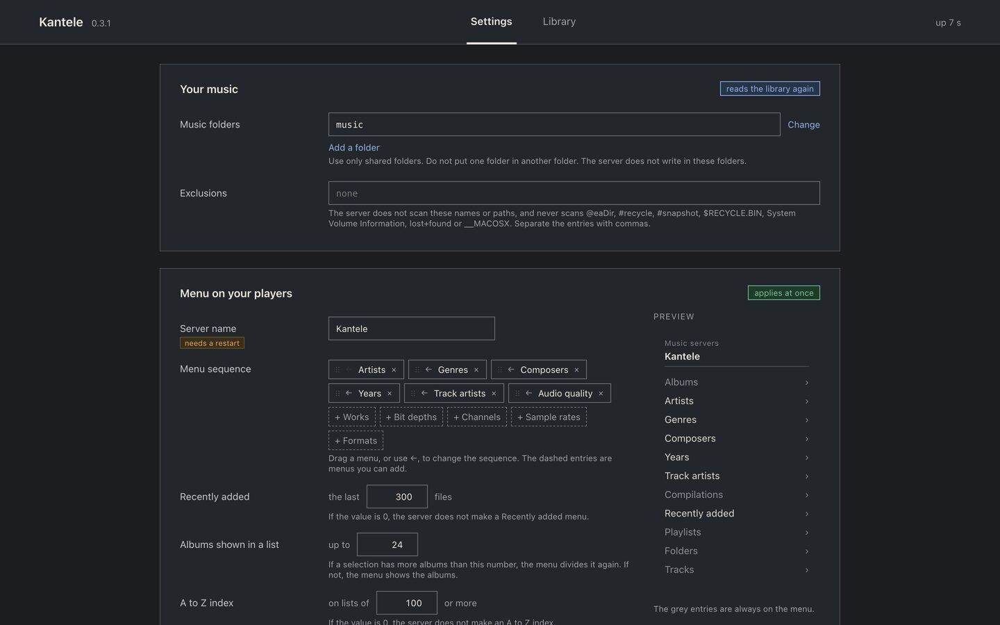

Kantele
KanteleKantele
A music server for your amplifier, streamer or phone. Point it at your music folder, and every UPnP/DLNA player on your network can browse it by album, artist, genre, composer or year, search it, and play it.
It runs on a Synology NAS, a Mac or a Linux machine. It is free and open source, and it makes no request to the internet.

What it does
- Albums as you tagged them. One album per folder, the discs of one album joined when the tags or the folder names say so, and compilations kept together under Compilations rather than under an artist called Various Artists.
- Menus that narrow. Open a genre and you are offered its artists, then their albums. A menu that would not narrow anything is left out.
- Long lists you can jump through. An A–Z entry at the top of a long list, Recently added, your playlists, a folder view, and the search box of your player.
- Files sent as they are. FLAC, ALAC and AAC, MP3, Ogg Vorbis and Opus, WAV, AIFF, WavPack, Monkey's Audio, and DSD in DSF and DFF. Nothing is converted.
- New music appears on its own. Add an album to the folder and your players find it, without a rescan.
- A library you can check. The page lists the files with no artist, album, genre or cover, the duplicate tracks, and the playlist entries that point nowhere.
Install
Synology
In Package Center, open Settings, then Package Sources, then Add, and give it this address:
https://gaelsimon.github.io/kantele/index.json
Kantele then appears in Package Center, and every later version arrives there as an update. One package runs on every model. Nothing is signed, so the trust level has to allow any publisher.
macOS and Linux
Take the archive for your machine from the latest release and run the installer inside it. On macOS it installs a launch agent, on Linux a systemd service.
Then
Open http://<your server>:8200/config, choose a music folder, and your player finds the server on its own. Getting started walks through it, and says what to expect while the library is read.

Documentation
- Getting started
- Install, choose the folder, find the server on your player.
- Your library on your player
- What each menu holds and how the menus narrow.
- Tagging your music
- Which tags make albums, artists, discs and covers.
- Settings
- What each setting on the page does.
- Troubleshooting
- No player finds it, the menus are empty, an album is split.
- Players
- The players it is used with, and how to report yours.
- Coming from MinimServer
- Where things are, what is different, what is missing.
What it does not do
It does not transcode, play video, or reach a streaming service. There is no password on it, so it belongs on a home network and not on the open internet.
Help
If something doesn't work, or your player shows something odd, open an issue on GitHub and say which player or amplifier you use.